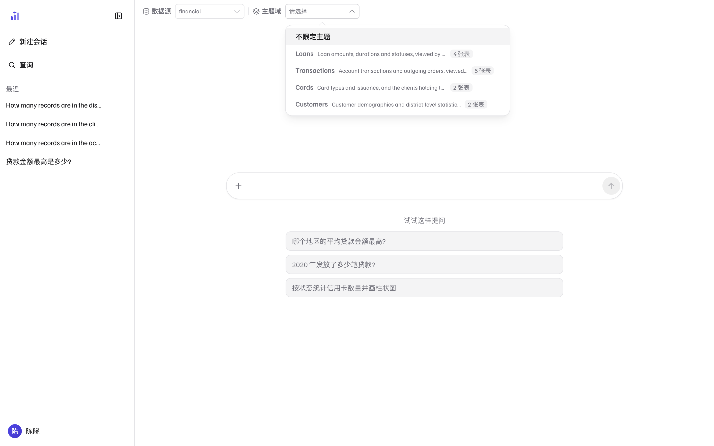
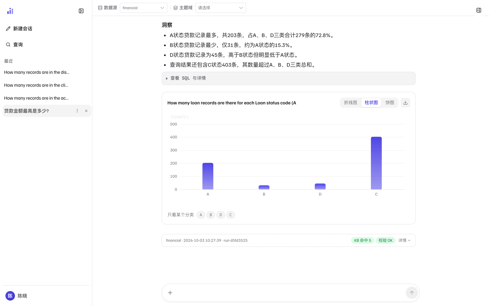

提问与读懂答案
Trove 的答案不是一个数字，而是一份可核查的结论： 结论、结果表、数据口径、洞察，再加一条通往证据的路——SQL、执行事实、校验与反思记录。 这一页讲怎么问，以及怎么把这份答案读完整。
怎么提问
用自然语言直接问，不需要写表名、字段名或 SQL。系统按数据源的语义模型与知识库理解你的问题， 自动判断复杂度档位（何时用更深的推理、更多的校验轮）——你不需要做任何设置。 几点经验：
- 带上实体名：问题里出现的地区、客户编号、年份、状态码会被逐项校验——答案的 SQL 里必须有对应的过滤条件，否则校验不放行。「哪个地区的平均贷款金额最高?」比「平均贷款金额」问得更好。
- 一次问一件事：「按状态统计贷款笔数」比「顺便看看金额分布」更容易得到精确答案。
- 口径不确定就明说：「按发放日期算」这类限定写进问题，比事后纠正便宜。
- 中英文都可以，但数据源知识库的语种决定了几率：知识库是英文建的（如 BIRD），用英文提问命中率更高——见知识库里的语种说明。
- 问题有边界就选主题域：提问框旁可选一个主题域把问题收敛到声明的数据范围（见下）。
主题域：给问题划一个范围
主题域是提问框旁的可选收敛项（与数据源选择器同一行）。 选一个域，这个问题就只在该域声明的数据范围里回答； 默认「不限定主题」，面向整个数据源。选中后，起始问题会换成该域的 示例问句（「从这里开始问」），不知道从哪问起时可以直接点。

1 2 3 4- 1主题域选择器——与数据源选择器同一行；当前数据源没有声明任何域时，整个选择器不显示。
- 2「不限定主题」——默认档：问题面向整个数据源回答。
- 3域与描述——名字和描述是建模原文，可能中英混排，展示层不代译；声明过的数据集全部下线的域会在这里置灰标「已失效」。
- 4「N 张表」——该域声明的范围数据集数量；悬停可以看到具体的表名清单。
- 越界或问不出来，都如实说——问题落在所选域的可答范围之外，会被明确告知（连同该域声明的范围），而不是悄悄放回整个数据源上给一个看似合理的答案。选范围是为了更准，不是为了被糊弄。
- 已失效的域置灰、但不消失——域声明过的数据集已全部从语义模型里下线时，标「已失效」且不可选。让它留在清单里是刻意的：静默消失会让你带着一个选不中的旧值继续提问。
- 没有可选的域时，选择器整个不显示——这个数据源还没在语义模型里声明主题域，不是故障。
选择按会话记住：切回旧会话会恢复当时的域；换了数据源则自动清掉（旧域的适用范围在新源上不成立）。 域的名字与描述来自数据源的知识库原文，可能中英混排——那是建模内容，展示层不代译。
答案解剖：从上到下读一遍
每条答案的版式是固定的。旗舰示例——「贷款金额最高是多少?」——被拆成了下面七块：
 1
2
3
4
5
6
7
1
2
3
4
5
6
7
- 1你的提问——留在会话里，多轮对话中后一条问题会继承前文的语境。
- 2结论——一句话给出答案本身。先读这里；数字有疑问再往下核。
- 3结果表——判定的原始行（这里是 1 行 1 列）。表头的「行 × 列」与统计条（如
590,820 · avg 590,820）帮助你确认数值范围；右上角能复制表格或下载结果（下载上限由管理员在系统设置里配置，默认 1000 行）。 - 4数据截止时间与置信度——截止时间是这次查询所依据数据的时间边界；无从判断时会如实写「无从判断」，不会猜一个日期。置信度给出 0–100% 的自评，它的依据在出处条的「详情」里。
- 5洞察——对结果的自然语言解读（极值、占比、异常）。洞察是模型的解读层，事实以结果表和依据为准。
- 6查看 SQL 与详情——展开后直接看这次执行的 SQL，不用打开抽屉。
- 7出处条——数据源、生成时间与耗时、模型、运行 ID（
run），加上两枚状态章：KB 命中（知识库命中的资产数）与校验 OK（确定性规则链全过）。展开「详情」还能看到来源档位与置信度依据。
这两项遵循「拿不到就不显示 / 如实说不确定」的披露纪律—— 宁可写「无从判断」，也不给一个看起来完整、实际是编的值。 看到「无从判断」不等于出错：它表示这次查询的画像里没有可依据的时间信息。
依据抽屉：从答案到证据
答案下方的「查看依据」打开右侧抽屉。这里回答三个问题： 这条 SQL 从哪来、执行发生了什么、它被怎么校验过。 核查一份数字是否可信，看这一页就够了。
 1
2
3
4
5
6
1
2
3
4
5
6
- 1来源与运行时——数据源、运行 ID、时间与来源档位（已认证复用 / 知识库复用 / 语义编译 / 模型生成，见下节）。
- 2生成的 SQL——实际执行的语句，一键复制。核查口径最快的一步就是读这条 SQL 的聚合与过滤。
- 3执行与计划要点——返回行数、估算扫描行数（来自执行计划）、是否发生降级（如强制 limit）。行数异常大或扫描全表，都在这里先露头。
- 4结果集预览——完整结果的前几行（受结果上限约束）。注意与答案里的展示表格不是一回事：这里是给核查用的原始行。
- 5校验与反思记录——确定性规则链的裁决（如
verdict = OK）与反思阶段的结论。这里出现非 OK 的条目，说明答案经过了自纠或降级，值得读细节。 - 6运行轨迹——本次运行的每个节点与耗时（路由、表关联、查询计划、生成、执行、校验……），出问题时这是最快的定位入口。
图表与下钻
当结果适合可视化（分类对比、时间序列）时，答案里会自动出现图表卡，默认选好图表类型。 例如「How many loan records are there for each Loan status code (A, B, D)?」：

1 2 3 4 5 6- 1洞察——同一份结果的文字解读，带具体数值与占比。
- 2图表类型——折线图 / 柱状图 / 饼图随手切换，不重新查询。
- 3下载——把当前图表保存为图片，用于汇报材料。
- 4图形区——轴与系列直接来自结果表，不经过任何二次加工。
- 5分类下钻——点某个分类只看它（如只看 C），图形联动过滤。
- 6出处条——与图 2 相同：图表也带完整出处与校验状态，可一样核到 SQL。
归因分析卡：问「为什么」时多出来的那块
问题在问「为什么」（归因类）时，答案正文下方会多出一张 归因分析卡：把「总变化从哪来」分解到主维度的每个分类上。 分解是确定性的、零 LLM——瀑布、贡献表与证据里的 SQL 同源同数。 与其它卡片同一套纪律：拿不到就不渲染，整节缺席，而不是给一块空壳。
 1
2
3
4
5
1
2
3
4
5
- 1度量与口径章——归因沿语义模型的已声明度量解析（这里是
max_loan_amount）；「归因」标卡片类型，「本期」标基线口径。 - 2总变化与主维度——当期相对基线的总差，以及沿哪个维度分解（这里是
loan.status）。 - 3瀑布图——每个分类对总差的贡献推演，首尾两端是基期与当期合计的参照柱。
- 4贡献表——逐行的基期 / 当前 / Δ / 贡献占比，与瀑布同源同数。度量可分解时，这下面还会多一段驱动器树（沿语义模型的表达式逐层拆）；本例是叶子度量（最大值），没有可拆的层级，这一节整节缺席。
- 5证据（查询 N）——这次归因实跑过的查询清单（本例两条：当期与基期各一条）。它是独立的只读分析：不成时整卡不出现，绝不改变答案本身；哪一步没做成以
degraded记在这里。
同一条分析在决策侧也接在告警上：判定触发时顺带跑一次， 把「主因」压进通知行——见决策规则里的「分析→决策桥」。 分解本身的数学（恒等式与残差）与取数预算（零查询预检、每期一条 SQL、降级记账）， 有独立的工程深潜：分解数学与驱动器树。
分析面板：看它怎么一步步算出来
右侧「分析过程」面板在提问后实时展开：从意图路由、表关联、查询计划， 到生成 SQL、执行、校验、反思、洞察的每一步，连同耗时与状态。 它回答的是「这条答案是怎么来的」，与依据抽屉的「证据」互补——前者是过程，后者是产物。
 1
2
3
4
1
2
3
4
- 1总览——步骤数与总耗时。同一问题在不同数据源上的耗时结构可能完全不同。
- 2步骤条目——每步带名称、耗时与状态圆点，点开看该步的细节（输入输出、命中资产、生成内容）。
- 3多路信号——「生成 SQL」步上的小章（关键词检索、记忆词面检索……）说明这一步参考了哪些检索通道的命中。
- 4思考——折叠的推理过程，排查「它为什么这么理解」时展开。
分析面板展示的是实时运行的轨迹；重新打开历史会话时，它不会回放当时的步骤。
要复盘历史运行，用答案出处条里的运行 ID（run）查服务端日志，
或从依据抽屉的运行轨迹看节点级记录。
答案来源四档：这条 SQL 从哪来
出处条「详情」与依据抽屉顶部都会给出来源档位。四档回答两个不同的问题—— 「有没有人背书」与「这条 SQL 从哪来」：
| 档位 | 含义 | 典型场景 |
|---|---|---|
已认证复用 certified | 复用了一条被人工认证过的模板——有人具名背书 | 管理员在知识库里认证过的标准问法 |
知识库复用 reused | 复用了知识库资产（模板 / 示例），但未经人工认证 | 同一问法第二次问；KB 精确命中 |
语义编译 compiled | 由语义层编译器按指标 / 维度定义拼出的权威 SQL——没进过模型 | 问题命中语义模型（如「贷款金额最高」命中指标定义） |
模型生成 generated | 模型生成的 SQL（含编译失败后的回退与软 MISS 骨架补齐） | 语义模型未覆盖的问题 |
拿不到证据时，档位一律倒向最保守的「模型生成」——把编译器的产物标低， 用户少知道一点；把模型编的标高，用户会得到一个不该有的信任。 「已认证复用」只在确实有人具名认证时出现；确定性生成（编译、模板）本身不算背书。
相关页面
| 你想做的事 | 去哪一页 |
|---|---|
| 反馈这条答案 / 让知识库吸收这次经验 | 反馈与知识沉淀 |
| 管理会话：搜索、重命名、删除、中断重试 | 会话管理 |
| 答案背后的机制（编译、校验、反思） | 查询工作流 |
| 语义模型里都有哪些指标与口径、主题域怎么声明 | 语义层 |
| 哪个用户能看到哪些主题域 | 用户·权限·安全 |
| 「KB 命中」命中的是什么 | 知识库 |
本页截图为真实界面（隔离的演示实例，数据是内置 BIRD 金融演示库）；
可用前端仓库里的 npm run shots 重新生成，_manifest.json 记录每张图的来源提交。